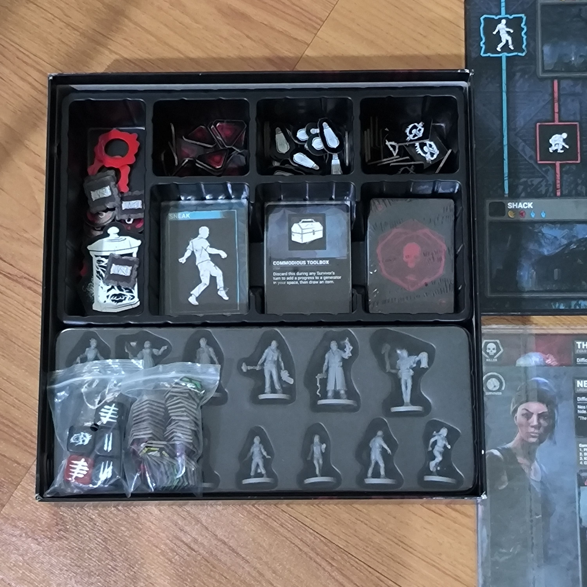

-

- |
- Boardgames

How to play : Dead by Daylight
การตั้งค่าเกม
- จำนวนผู้เล่น: 2-5 คน
- เตรียมส่วนประกอบ:
- แผนที่เกม (Board) ที่มีสภาพแวดล้อมที่แตกต่างกัน
- การ์ด Killer และ Survivor
- การ์ดไอเท็ม (Items) และการ์ดสถานะ (Status Effects)
- ลูกเต๋า
- การ์ดเคลื่อนที่และสถานะ
- figure ตัวละคร Killer และ Survivor
- Props ตามแผนที่เกม (Board)
- จัดเตรียมผู้เล่น:
- ผู้เล่นจะถูกแบ่งเป็นสองฝ่าย: Killer และ Survivors
- ผู้เล่นจะได้รับการ์ดตัวละครที่ระบุความสามารถพิเศษและอุปกรณ์ของตัวละคร
วิธีการเล่น
- การตั้งค่าพื้นที่:
- วางแผนที่เกมตามกฎที่ระบุ โดยทำให้แผนที่พร้อมสำหรับการสำรวจและการหลบหนี
- การเคลื่อนไหว:
- Survivors จะต้องเคลื่อนที่เพื่อค้นหาสิ่งของและเครื่องมือที่ช่วยในการเอาชีวิตรอด
- Killer จะต้องเคลื่อนที่เพื่อตามล่า Survivors และจับพวกเขา
- การกระทำของ Killer:
- Killer จะใช้ความสามารถพิเศษในการค้นหาและจับ Survivors
- ใช้การ์ด Killer เพื่อเพิ่มความสามารถในการตามล่าและจับ Survivors
- การกระทำของ Survivors:
- Survivors จะต้องหาวิธีหลบหนีและใช้ไอเท็มที่พบเพื่อช่วยในการเอาชีวิตรอด
- ใช้การ์ดและเครื่องมือในการบำรุงรักษาและซ่อมแซมอุปกรณ์
- การซ่อมเครื่องมือ:
- Survivors จะต้องซ่อมเครื่องมือหรือทำภารกิจที่กำหนดเพื่อให้สามารถหลบหนีได้
- การจบเกม:
- เกมจะจบเมื่อ Survivors หลบหนีสำเร็จ หรือ Killer สามารถจับ Survivors ได้ครบตามเงื่อนไขที่กำหนด
- ผู้ชนะจะถูกตัดสินตามผลลัพธ์ของเกม เช่น Survivors ที่หลบหนีได้หรือ Killer ที่จับ Survivors ได้ครบ